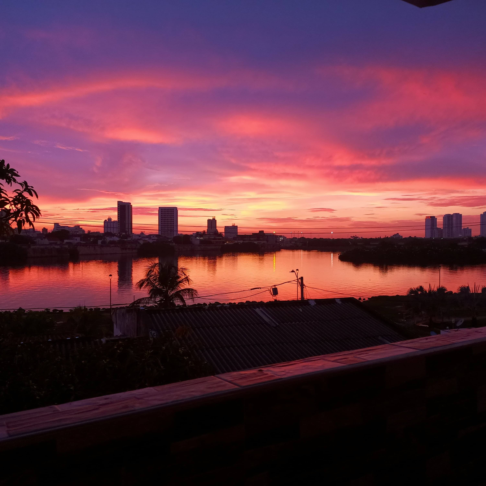

Amanecer
momento en que aparece el sol y comienza el día Se levantó temprano para ver el amanecer

Disfrutando de un precioso amanecer de domingo
Foto tomada de internet para ejercicio
Cuando a la palabra día se le añade un cierto complemento, se hace referencia a una jornada específicadonde se celebra o se conmemora algún acontecimiento: Día del Niño, Día de la Bandera, Día de la Independencia,
momento en que aparece el sol y comienza el día Se levantó temprano para ver el amanecer
Disfrutando de un precioso amanecer de domingo
Foto tomada de internet para ejercicio
Un astro, en particular el Sol, está en el ocaso cuando, por efecto de el movimiento del sol, atraviesa el plano del horizonte y pasa del hemisferio visible al no visible.
En el hemisferio norte en primavera y verano el Sol se pone entre el oeste y el norte (declinación positiva); en otoño e invierno su ocaso es entre el oeste y el sur (declinación negativa). Simultáneamente, en el hemisferio sur en otoño e invierno, el ocaso es entre el oeste y el norte, y en primavera y verano entre el oeste y el sur. Las estrellas circumpolares no tienen ocaso ni amanecer.
Foto tomada de mi galería